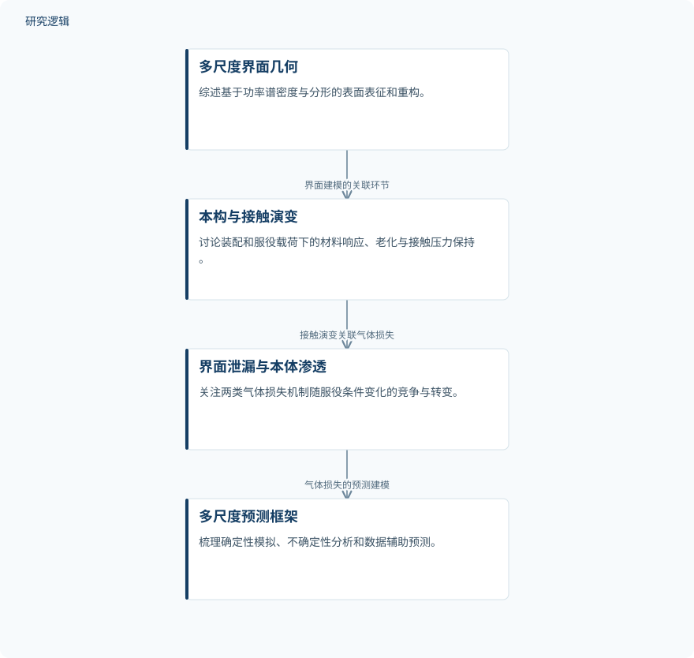

摘要解读
质子交换膜燃料电池垫片—膜电极组件边框界面多尺度泄漏建模：简评
Multiscale Leakage Modeling of PEMFC Gasket–MEA Frame Interfaces: A Mini-Review
解读更新 2026-10-17 14:53 · 依据公开摘要整理，未核验全文细节
重载应用中的质子交换膜燃料电池，密封可靠性不能只看装配时是否严密，还要关注服役过程中接触状态与气体损失如何演变。这篇短综述围绕垫片—膜电极组件框架界面，梳理从表面形貌、材料老化到多尺度泄漏预测的关联，为理解长期密封可靠性提供阅读线索。
文章目录
从初始密封转向长期接触演变
质子交换膜燃料电池（PEMFC）的重载应用提出了严格的耐久性要求。摘要强调，密封评价需要超越初始装配状态，把界面接触的长期变化与气体损失联系起来。本文聚焦垫片—膜电极组件（MEA）框架密封界面，尤其关注柔性—柔性接触。
这一问题不仅涉及界面是否存在泄漏通道，还涉及气体通过材料本体渗透的过程。因此，理解密封可靠性需要同时考虑接触状态、材料响应与服役条件，而不能仅凭初始密封状态判断长期表现。
以多尺度建模串联形貌、接触与输运
本文是一篇短综述，摘要描述的是对相关进展的系统梳理，而非一项新实验。其内容覆盖多尺度几何表征与重构、装配及服役载荷下的本构与接触演变，以及从确定性模拟走向考虑不确定性和数据辅助的预测框架。
具体方法包括基于功率谱密度（PSD）与分形的表面重构，以及用于描述弹性体老化和接触压力保持的黏弹性—超弹性、化学—热—力学模型。综述还涉及滑移流与克努森尺度效应、流固耦合、随机公差分析和代理模型辅助预测。
依据摘要整理的多尺度建模关联示意


概括综述中几何、接触、气体输运与预测框架的关联，不代表论文原图或已经验证的统一计算流程。
下载 SVG图示关系说明
实线表示相邻阶段的信息流，虚线表示跨阶段联系或反馈。
多尺度界面几何 → 本构与接触演变：界面建模的关联环节；本构与接触演变 → 界面泄漏与本体渗透：接触演变关联气体损失；界面泄漏与本体渗透 → 多尺度预测框架：气体损失的预测建模
气体损失的主导机制随服役条件转变
摘要明确指出，气体损失行为取决于随服役条件变化的机制转变：一侧是压力驱动的界面泄漏，另一侧是对温度敏感的材料本体渗透。界面泄漏与本体渗透需要共同考虑，不能把气体损失简单归结为其中一种机制。
综述同时归纳了流固耦合、随机公差分析与代理辅助预测的近期进展。不过，摘要未给出这些方法的定量精度、计算成本或相互比较结果，因此这里的发现应理解为机制认识与建模进展的概括，而非某种模型优越性的验证。
摘要不足以界定模型比较与验证范围
本解读仅依据完整摘要。摘要未交代综述纳入的文献数量、检索与筛选方式，也未报告所讨论研究的样本规模、材料组合、工况范围或模型比较基准，因而无法判断相关结论覆盖哪些具体密封系统。
摘要将生命周期界面建模、原位实验验证和基准数据集列为未来需求，但这不等于论文或既有研究没有开展验证。各类模型获得了何种验证、适用边界在哪里，仍需进一步阅读正文及其引用研究。
阅读启发：先看物理约束，再看运维用途
阅读启发：面向智能运维，可重点追问物理信息机器学习如何与多尺度泄漏预测结合，以及健康状态评估需要哪些可观测量和验证证据。摘要将电堆健康评估与预测维护列为未来用途，不能据此认定这些用途已经得到验证。
阅读启发：面向结构可靠性，可继续关注表面形貌、接触压力保持和随机公差如何进入预测框架，以及模型怎样区分界面泄漏与本体渗透。当前资料支持这些阅读方向，但不足以推导具体优化方案或改进效果。
以上为本站阅读启发与建议，不是论文已验证的结论。